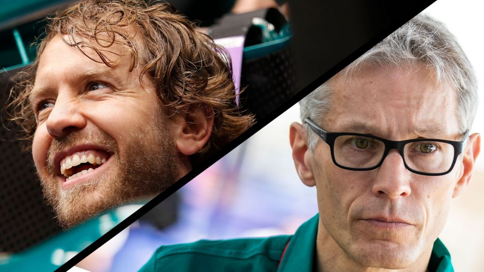

Aston Martin Team Principal Mike Krack has said his squad would be “foolish” not to try and keep Sebastian Vettel beyond the end of this season, when the four-time champion’s current contract expires. But Krack also admitted that Vettel would need to see “progress” from the squad in order to want to extend his stay with the team in green. Aston Martin made a slow start to the season, failing to score points in the first three races of the season – with Vettel side-lined with Covid-19 for two of those race, as Nico Hulkenberg stepped in. However, the team from Silverstone in the UK showed signs of improvement at Imola, with Vettel and Lance Stroll finishing P8 and P10 respectively to lift Aston Martin to ninth in the constructors’ standings.
Krack – who previously worked with Vettel as his race engineer at BMW Sauber when Vettel was 19 years old – spoke glowingly of his driver, describing working with the German as a “pleasure” and praising the former Ferrari driver’s “high work ethic.” Asked what had impressed him particularly about Vettel’s approach, Krack replied: “Well, everything. He has a very, very competitive approach, despite the big success that he was already having. He has a very high work ethic that I really share and that I already appreciate.“There is no time of the day where it is too late to work or to have some input. So, from that point of view, it’s a pleasure to work with him, because first of all, he is what I described already but then also he's a nice guy, he's a nice fellow and he understands where our limitations are at the moment. “But he doesn't stop pushing and he is realistic about what we do, so it's a matter of trying to merge what we think we [have to] do and what he thinks we have to do and be open, transparent, have good conversations and move on.”